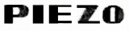
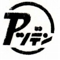
  
PIEZO（ピエゾ）/AZDEN（アツデン）
1952年設立の日本圧電気株式会社（現社名 アツデン）のブランド。社名及びブランド名の由来は圧電素子を用いるセラミックカートリッジ等を得意としたためか。1969年には当時の社長がロウシェル塩圧電素子に関する貢献で、紫綬褒章を受賞している。管理人は写真でしかみたことのないクリスタル型ヘッドフォン等も製作していたようだ。

(セラミックカートリッジ ステレオ用針とSP用針を持つ 左がターンオーバー型 右がアツデンのニードルターンオーバー型）
オーディオブランドとしては1975年頃まで、やはり圧電効果にちなんだ「PIEZO（ピエゾ）」をブランド名としていたが、その後「アツデン」に変更、1993年には社名も「アツデン」としている。
ヘッドフォンメーカーとしては、コンデンサー型も含むラインナップを持っていたが、1980年代になりインナーイヤー型、軽量タイプの安価なモデルのみとなった。2000年頃までは自社製品を出し続けていたが、このページ開設時（2009年4月）ではは「MD」の型番で他社向けOEMを行っていたが、現在（2021年6月）では、自社オリジナルの2.4GHzデジタルコードレスヘッドフォンしか、会社のホームページには無い。なお1970年代から続いているブランドでは珍しく、現時点までに確認できるモデルの大半はオープンエア型である。
AZDEN
（アツデン）の製品を以下のように分類する。（この分類は個人的な意見で、メーカーの分類ではありません）
なおアツデン（＝ピエゾ）の1970年より以前の製品については資料が現時点では手元にほとんどない。
�T.PIEZO（ピエゾ）」時代の製品（ただし現時点で判明している機種はすべてAZDENブランドに引き継がれた）
DSR-8
DSR-7
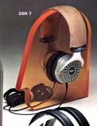
（コンデンサー型） ESR-2
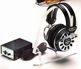
�U.AZDEN時代の製品
ブランド名がAZDENに変わってからは、コンデンサー型ESR-2の立場を引き継ぐような上位モデルは現れず、小型軽量タイプの発売が続く。さらに低価格のインナーイヤー型が主力となっていった。
(1)オーバーヘッド型のモデル
DSR-9
DSR-12
DSR-12T
DSR-19
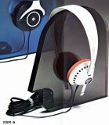 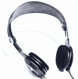 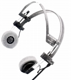
DSR-20 DSR-21 DSR-23 DSR-24 DSR-24�U
DSR-25S
DSR-25U
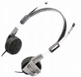 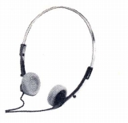
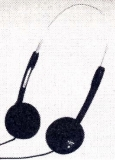 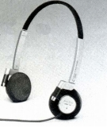
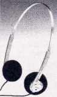
(2)インナーイヤー型のモデル
DSR-27 DSR-28 DSR-32 DSR-35
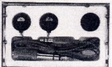
DSR-V80 DSR-82 DSR-82�U
DSR-V82
DSR-88
DSR-S88
DSR-V88
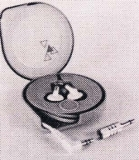
DSR-V90 DSR-92 DSR-V92 DSR-V95
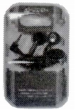